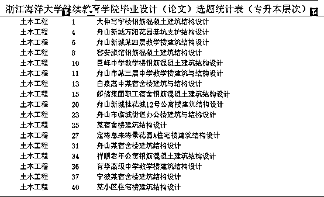
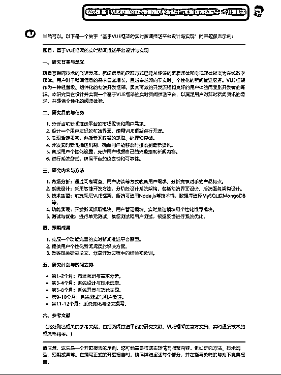
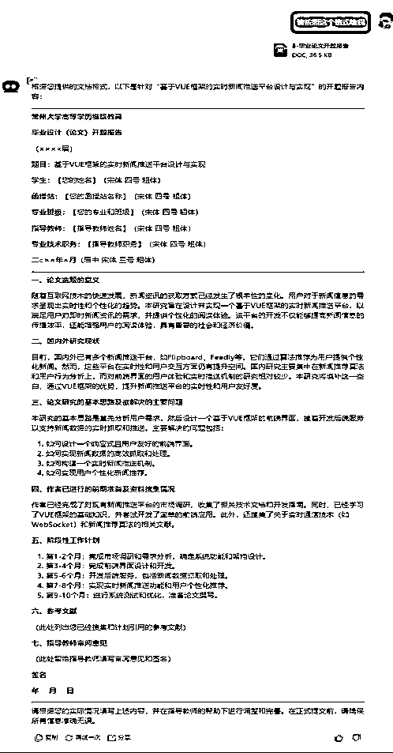
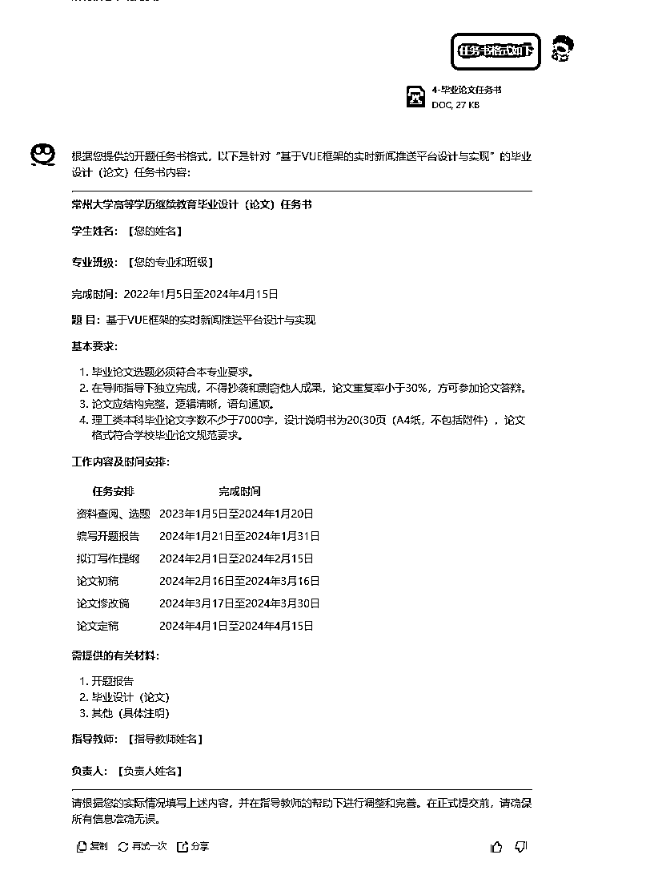
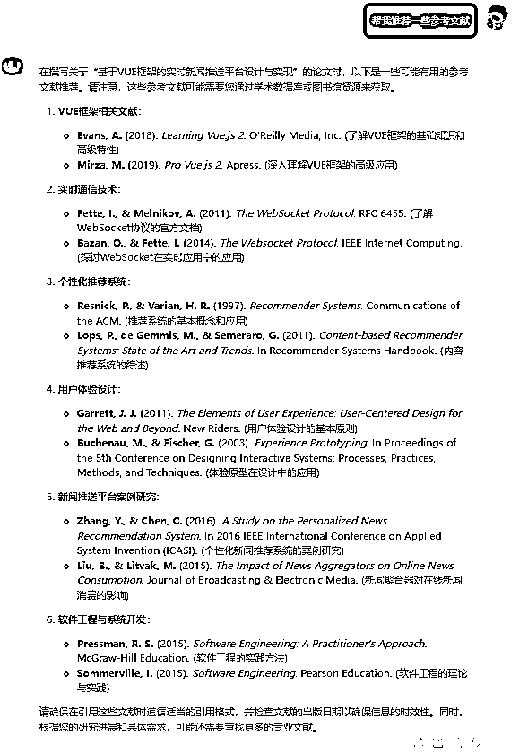
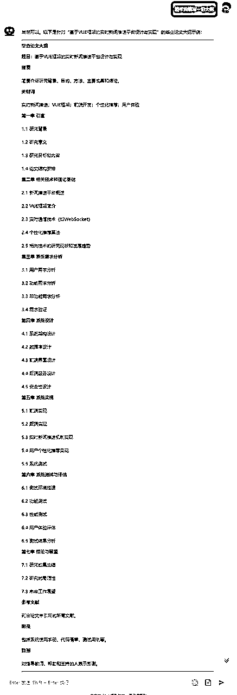
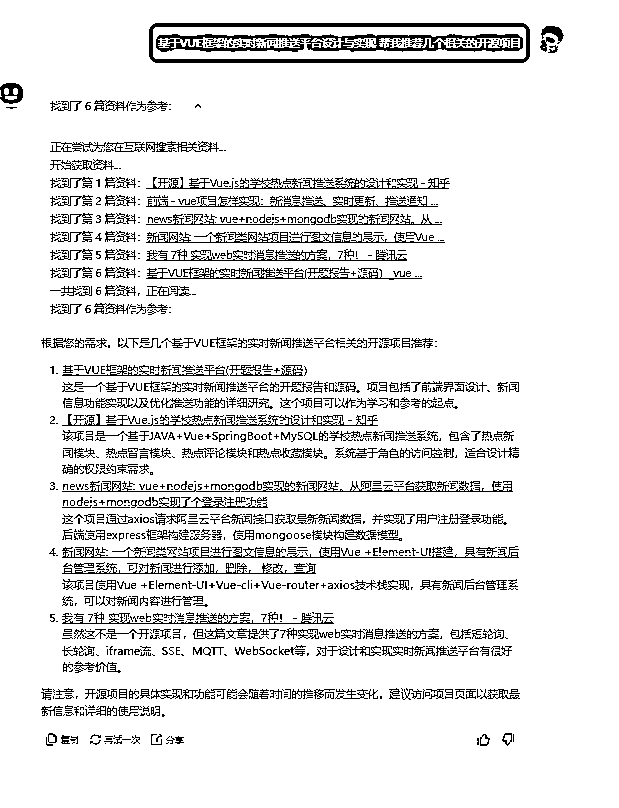

来源：https://n63xx7fb88.feishu.cn/docx/DfqldpFCOoDPslxhHX4chHykn4c
随着大模型的发展，目前国产AI的功能也日益完善，也可以帮助我们完成，论文编写
其他生成式AI也是可以的。本文方法同样适用于GPT,Claude
论文编写大概可以分为以下七步。
首先学校都会给一个选题方向，
比如：

如果没有给出具体选题，也可以根据个人专业情况来让AI推荐一个。
可以直接让AI编写一份。
比如：

也可以让AI根据指定格式编写
例如：

只不过生成的是文本格式的，需要复制到word中去。

可以直接让AI写，

也可以上传模板让AI帮忙编写。

可以让AI帮忙查找一些参考文献以及项目
这里可以直接让KIMI查找，也可以用秘塔AI搜索。



我们需要AI从学术角度给我们一些专业名词的解释以及说明，这样帮助我们更好的编写论文。


根据之前生成的大纲，给AI一个主题，然后要求字数限制。



1.KIMI有时候文件传多了，会断网，可以选择再开一个新窗口。
2.智谱清言在编程方面效果显著，KIMI在文本编写方面，资料阅读方面能力突出
3.本文推荐的所有AI产品都是免费的。国产不一定比海外产品差，不要过分迷恋大厂产品。够用就行。
AI如何帮助降重
AI绘画如何制作科研绘图